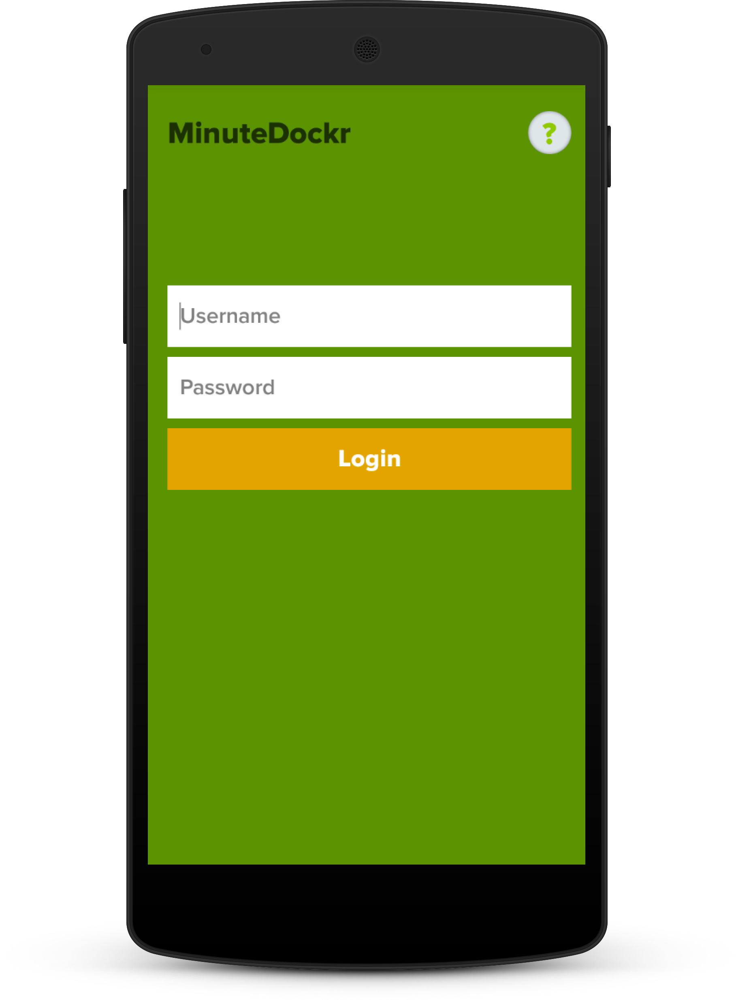
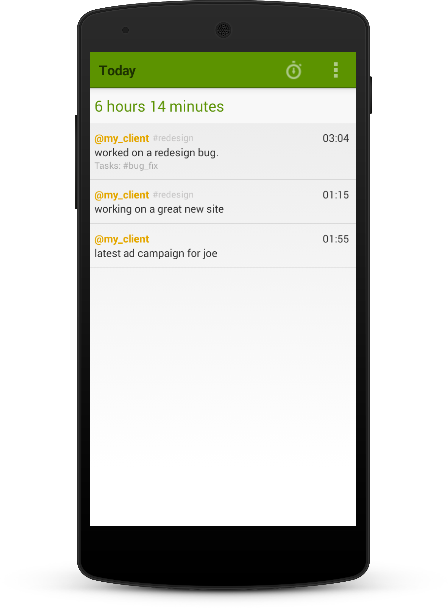

Finally!
MinuteDockr is the MinuteDock app for Android you've been waiting for.
So, how does it work?
If you have a MinuteDock account, you have an API key.
Log in using this secret key and we'll handle the rest.
Don't have a MinuteDock account? Go get one!
Log time from anywhere.
We're putting the awesome power of MinuteDock's docking system in the palm of your hand.
Tap once to start or stop the timer. If you need to edit the current duration, try holding down on the timer.
All your Contacts, Projects and Tasks are readily available so you can "dock some minutes" on any project, anywhere.
You've got time, we've got management.
View all your entries for the current day so you can stay on top of things.
Widgets? Why, of course!
The only way this app could get any better is if it had widgets. Well guess what? It does.
Start and stop your timer from the lock screen or the home screen using the handy dandy widgets.

